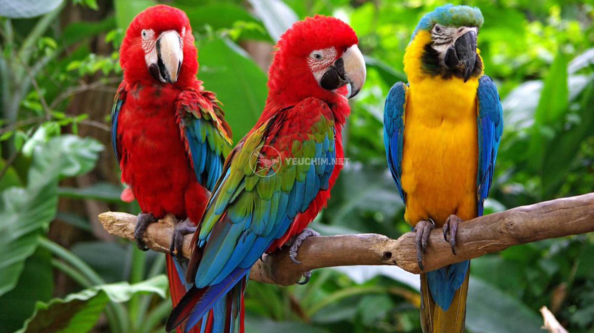

>> Cẩm nang chăm sóc chó PHỐC SÓC
.jpg)
Vẹt Yến Phụng còn có tên gọi khác là vẹt Hồng Kông.
Yến Phụng thuộc nhóm vẹt nhỏ đuôi dài, khi sống ở ngoài thiên nhiên hầu như loài vẹt này không có khả năng tự vệ hay chiến đấu. Nhờ tính cách hiền lành, vô hại và vẻ ngoài thu hút nên dần dần chúng được nhân giống và nuôi kiểng ở nhiều nơi trên thế giới, trong đó có Việt Nam.
Khi sống trong tự nhiên, Yến Phụng là loài có bản tính hiền lành, chủ yếu là do chúng không có khả năng chiến đấu. Đổi lại chúng có tốc độ bay rất nhanh để tránh kẻ thù, thêm vào đó là khả năng ngụy trang và lẩn trốn tài tình.
Chim Yến Phụng cũng mang đặc tính nói nhiều vốn dĩ là sở trường của các loài vẹt nói chung. Đây cũng là điểm mà nhiều người yêu thích và chọn nuôi vẹt. Tuy nhiên, để chúng nói được thì phải qua một quá trình huấn luyện kiên trì. Thêm vào đó những chú vẹt đến từ Hồng Kông bị cho là không nhanh nhạy bằng các loài vẹt khác, cho nên để chúng nói được sẽ mất nhiều thời gian hơn. Giống vẹt này có khả năng nhại giọng rất tốt
.jpg.crdownload.jpg.jpg)
.jpg.crdownload.jpg)
Vẹt má vàng hay còn gọi là xích (Danh pháp khoa học: Psittacula eupatria siamensis) là một phân loài của loài vẹt Alexandri (Psittacula eupatria) phân bố ở bán đảo Đông Dương gồm Việt Nam, Lào, Campuchia và Đông Bắc Thái Lan. Đây là phân loài nhỏ nhất trong số các phân loài của loài vẹt Psittacula eupatria với đặc trưng là có má vàng và cặp chân màu vàng nhạt
Đặc điểm
có chiều dài toàn tân trung bình khoảng 56 cm và cân năng khoảng 200-300 gram. Sải cánh khoảng 17.9–20.5 cm (7.0–8.1 in), chúng thuộc nhóm vẹt rừng đuôi dài có viền cổ. Con trống trưởng thành có đường viền sẫm màu phía sau gáy (ring) và các cá thể chim đều có đuôi rất dài, chiếm khoảng 1/2 tổng chiều dài toàn thân. Chúng là loài vẹt khá thân thiện, dễ thuần, có khả năng nhại giọng tốt, sức đề kháng khá tốt, với tuổi thọ có thể đạt đến 30-40 năm.
>> Cẩm nang chăm sóc chó POODLE

Vẹt xám Châu Phi, chúng chủ yếu có màu lông màu xám, một số có viền mỏng, đẹp. Vẹt xám Congo tự hào với mỏ màu đen sáng bóng và lông đuôi màu đỏ tươi, trong khi vẹt xám Timneh có hàm trên màu sừng (ngà) và lông đuôi màu nâu sẫm. Vẹt xám Châu Phi được coi là thông minh nhất trong số các loài vẹt, thực tế sẽ trở nên rõ ràng hơn khi bạn quan sát hành vi của chúng. Nhiều con trở nên cực kỳ ngọt ngào và tình cảm đối với chủ nhân của chúng, và loài này được biết đến là khá hòa đồng. Nhưng khi vẹt xám cảm thấy bị bỏ rơi hoặc buồn chán, chúng sẽ không ngần ngại bộc lộ sự than trách của mình khi có cơ hội.
Được các chuyên gia xếp vào loài thông minh nhất trong số các loài chim, nằm trong nhóm các loài động vật thông minh nhất thế giới. Cách nói chuyện của chúng cũng bắt nguồn một phần từ đặc tính vốn dĩ của loài, một phần do sự huấn luyện. Tuy nhiên, có những con vẹt sẽ chưa sẵn sàng nói chuyện cho đến khi được 1 tuổi. Có nhiều con thì bắt đầu sớm hơn, cũng có nhiều con đến 2 tuổi mới chập chững nói, một số con đơn giản là không nói gì cả. Nên việc huấn luyện đầy đủ và chuyên nghiệp sẽ là chìa khóa dẫn đến thành công trong việc dạy nói cho vẹt nhanh nhất.
.
.jfif)
Vẹt Mã Lai / Vẹt Cockatiel trở thành vật nuôi phổ biến trong những năm 1900. Chúng rất dễ sinh sản trong điều kiện nuôi nhốt và tính cách ngoan ngoãn, thân thiện khiến chúng trở thành một loài vật thích hợp tự nhiên cho cuộc sống gia đình.
Những chú vẹt nhỏ này rất hiền lành và thích được cưng nựng, ôm ấp. Vẹt Mã Lai không nhất thiết phải thích âu yếm. Nó chỉ đơn giản là muốn ở gần bạn và sẽ rất vui khi gặp bạn.
Vẹt Mã Lai là loài vẹt thông minh và có thể học nhiều thủ thuật khác nhau theo thời gian. Từ vẫy tay và huýt sáo đến rung chuông, chúng là những chú vẹt nhỏ thông minh sẽ thích thử thách mới.
Vẹt Mã Lai kêu và huýt sáo nhưng không ồn ào như một số loài vẹt khác. Xét về danh tiếng, Vẹt Mã Lai đực có ưu thế trong việc bắt chước giọng nói và tiếng huýt sáo. Tuy nhiên, Vẹt Mã Lai cái không hề lép vế; họ cũng giỏi bắt chước. Vẹt Mã Lai có thể lặp lại âm thanh từ ngôi nhà của bạn, bao gồm đồng hồ báo thức, điện thoại và thậm chí cả tiếng vẹt hoang dã bên ngoài.
>> Cẩm nang chăm sóc chó HUSKY

Tuy là một giống vẹt nhỏ nhưng Lovebird lại có một tính cách rất dạn dĩ, chúng ham học hỏi, tò mò, di chuyển rất nhiều và đặc biệt rất thích làm trò để tạo tiếng cười cho người nuôi
Hầu hết chúng ta đều nhận thấy giống này sống với nhau thành đôi, đó là lí do tạo nên tên chim uyên ương của chúng. Tuy nhiên, một thực tế khá trái ngược đó là hầu hết những người nuôi chim uyên ương thường chỉ nuôi một bé duy nhất chứ không nuôi một đôi.
Lí do của vấn đề này chính là khi được nuôi theo cặp, giống vẹt ngày sẽ quấn quít với nhau và sẽ ít hoặc không có ý định tương tác với con người. Mặc dù là một loại vẹt, cũng có khả năng bắt chước giọng nói của con người, nhưng Lovebird lại không nằm trong số những loài mà người yêu chim đặt vào nhóm chim biết nói . Điều này là do giống này rất hiếm nói chuyện, nếu được chúng sẽ chọn bắt chước một âm thanh, thường là những tiếng động đơn giản như tiếng huýt sáo hoặc âm thanh như chuông cửa và tiếng bíp bíp của lò vi sóng.
>> Cẩm nang chăm sóc chó CHOW CHOW

❮
❯
Vẹt macaw thường là những con vẹt vui tươi và thường hay pha trò. Chúng là những sinh vật có tính xã hội cao cả trong môi trường hoang dã và nuôi nhốt. Nếu được con người nuôi từ khi còn nhỏ, thì chúng sẽ trở nên gắn bó với chủ nhân của chúng.
Các nhà khoa học và những người đam mê đã quan sát những con chim này chơi với các đồ vật mới. Chúng thường tung những thứ mới lên không trung và bắt chúng bằng mỏ hoặc bằng chân. Chúng cũng sẽ liếm và nếm đồ vật để thử và biết thêm thông tin về nó.
Vẹt Macaw thường kết thành cặp. Dù vậy, chúng cũng thường tìm cách tạo thành những đàn lớn hơn từ 30 đến 40 con hoặc nhiều hơn. Số lượng gia tăng nhằm mục đích bảo vệ bản thân khỏi con người, rắn, các loài chim lớn hơn, báo đốm và các mối đe dọa khác.
Vẹt đuôi dài Macaws thường kêu hoặc phát ra tiếng động lớn để giao tiếp hoặc để cảnh báo bạn tình trong đàn của chúng. Trong điều kiện nuôi nhốt, chúng thích học từ và sẽ luyện từ vựng mới cho đến khi chúng thành thạo.
>> Cẩm nang chăm sóc chó AKITA